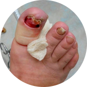

Грибок – это опасная инфекция
которая угрожает вам и вашим близким, ведь с каждым днем грибок приводит к:
1

Сложным формам аллергии
Может появится сильная реакция на на привычную пищу, одежду, средства гигиены
2

Потере ногтя и ампутации пальцa
После полного разрушения ногтя грибок распространяется на палец, что приводит к его ампутации
3
Тяжелому поражению внутренних органов
Может привести к повреждениям мозга, слепоте, отказу печени, почек и сердца
Статистика: каждые 60 секунд врачи диагностируют опасные поражения внутренних органов,
вызванные грибком, у 1-го пациент